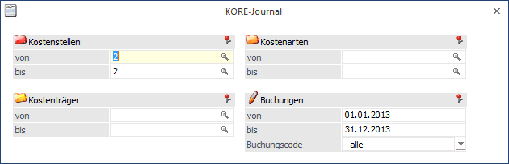
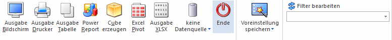

Das Kostenjournal wird im Menüpunkt
1 Auswertungen
1 Journal
oder Schnellaufruf
1 STRG + J
abgerufen.

Ø Kostenstellen von - bis
Eingrenzung der Ausgabe auf Kostenstellen.
Ø Kostenträger von - bis
Eingrenzung der Ausgabe auf Kostenträger.
Ø Kostenarten von - bis
Eingrenzung der Ausgabe auf Kostenarten.
Ø Datum von - bis
Eingrenzung, welcher Journalbereich ausgegeben werden soll.
Ø Buchungscode
Der Journaldruck kann nach der Herkunft der Kostenjournalzeilen selektiert werden:
Ø Alle
= Alle Buchungszeilen, egal welcher Herkunft.
ü 1 - FIBU
ü 3 - ANBU
ü 4 - LOHN
ü 5 - PROD
ü I - intern
D.h. alle internen
Buchungen, die in der WinLine KORE direkt erfasst, automatisch verteilt,
berechnet oder durch Umlage von Hilfskostenstellen erstellt worden sind).
ü ASCII Import
Die Auswertung des Journals erfolgt sortiert nach Datum. Innerhalb dieser Datumssortierung wird nochmals nach der Erfassungsreihenfolge sortiert.
Buttons

Ø Ausgabe Bildschirm
Mit Hilfe des Buttons "Ausgabe Bildschirm" oder der Taste F5 wird die Auswertung am Bildschirm ausgegeben.
Ø Ausgabe Drucker
Durch Anwahl des Buttons "Ausgabe Drucker" wird die Auswertung am Drucker ausgegeben.
Ø Ausgabe Tabelle
Bei der Anwahl des Buttons "Ausgabe Tabelle" wird das KORE-Journal in Form einer WinLine Tabelle dargestellt (nähere Informationen entnehmen Sie bitte dem Kapitel KORE-Journal Tabellenausgabe).
Ø Power Report
Durch Drücken des Buttons "Power Report" wird die Auswertung auf Basis von Cube-Daten grafisch dargestellt. Die Ausgabe ist individuell anpassbar und erfolgt in der Form von "Widgets", die unterschiedlichsten Darstellungen ermöglichen.
Ø Cube erzeugen
Wenn die Option "Cube erzeugen" gewählt wird (nur möglich, wenn auch die entsprechende Lizenz dafür vorhanden ist), dann wird das Kore-Journal im "Olap Viewer" angezeigt. In diesem können die Daten nach verschiedenen Gesichtspunkten ausgewertet werden.
Ø Excel Pivot
Durch Anwahl des Buttons "Excel Pivot" werden die selektierten Zeilen in Form einer Pivot Ausgabe in Microsoft Excel (2007 oder höher) angezeigt.
Ø Ausgabe XLSX
Mit Hilfe des Buttons "Ausgabe XLSX" wird die Auswertung mit den von Ihnen definierten Selektionen an Microsoft Excel übergeben.
Ø Datenquelle
Mit Hilfe dieser Auswahl kann definiert werden, ob und wie eine Datenquelle (d.h. ein Snapshot oder eine MasterView) verwendet werden soll.
ü Keine Datenquelle
Bei Auswahl
von "keine Datenquelle" wird keine zuvor angelegte Datenquelle genutzt. D.h. die
Daten werden von der WinLine "live" ermittelt und in der gewünschten Form
ausgegeben.
Hinweis
Da die BI-Ausgabe (z.B. Cube oder Power Report) immer eine Datenquelle benötigt, wird im Hintergrund eine temporäre Datenquelle (Snapshot) gebildet.
ü Datenquelle
erstellen/aktualisieren
Die Daten werden zur Laufzeit ermittelt und an einen
zu definierenden Snapshot übergeben. Nach dem Füllen der Datenquelle wird die
gewünschte Ausgabevariante über die Datenquelle erzeugt. Dieser Vorgang kann mit
einer Zeitverzögerung verbunden sein, da die Daten zusätzlich gespeichert werden
müssen.
ü Datenquelle verwenden
Bei der
Verwendung eines Snapshots werden die Daten direkt aus der Datenquelle gelesen,
d.h. die für die Ausgabe benötigten Daten können ohne Verzögerung in der
gewünschten Variante ausgegeben werden.
Wird hingegen eine MasterView
gewählt, so werden die Daten für die Ausgabe "live" ermittelt, wobei diese so
aktuell sind wie die zugrunde liegenden Datenquellen.
Hinweis
Der Button "Datenquelle verwenden" wird nur angeboten, wenn für diesen Bereich (bezogen auf den aktuellen Benutzer / Mandanten) zumindest eine private oder öffentliche Datenquelle existiert. Des Weiteren stehen nur die Ausgabevarianten "Power Report", "Cube erzeugen", "Excel Pivot" und "Ausgabe XLSX" zur Verfügung.
Hinweis
Weitere Informationen zum Thema "Datenquellen" entnehmen Sie bitte dem Kapitel "Die Datenquelle".
Ø Ende
Mit Ende verlassen Sie den Bildschirm, ohne die Eingaben zu speichern (wenn Sie zuvor nicht OK gedrückt haben).
Ø Filter bearbeiten
Es gibt die Möglichkeit, einen sogenannten "Filter" zu definieren. Mit diesem Filter können zusätzliche Selektions- und Sortierkriterien hinterlegt werden. Die einzelnen Definitionen können auch fix mit einem eigenen Filternamen gespeichert werden.